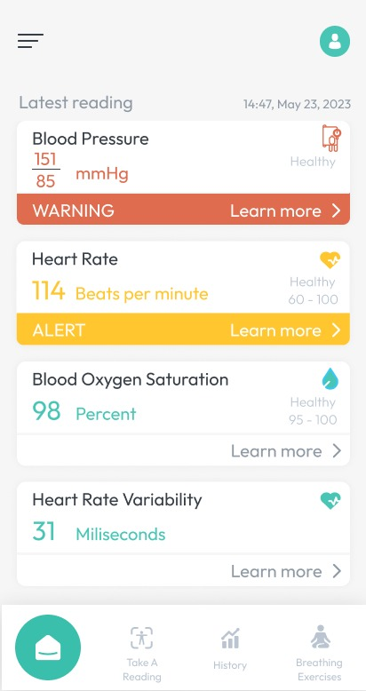
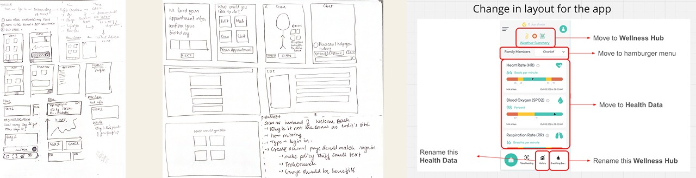
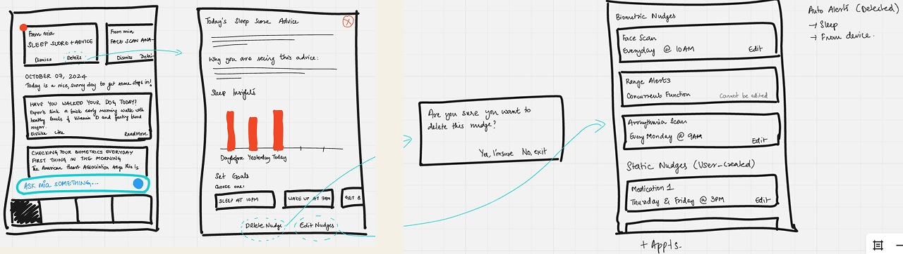
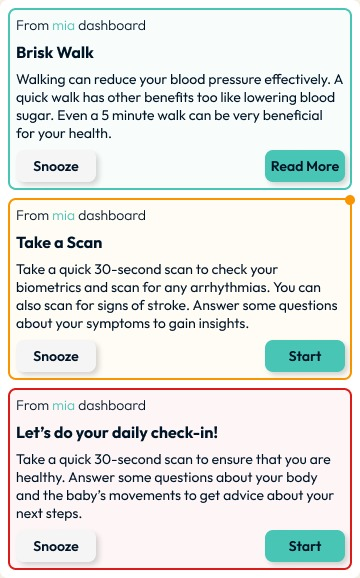
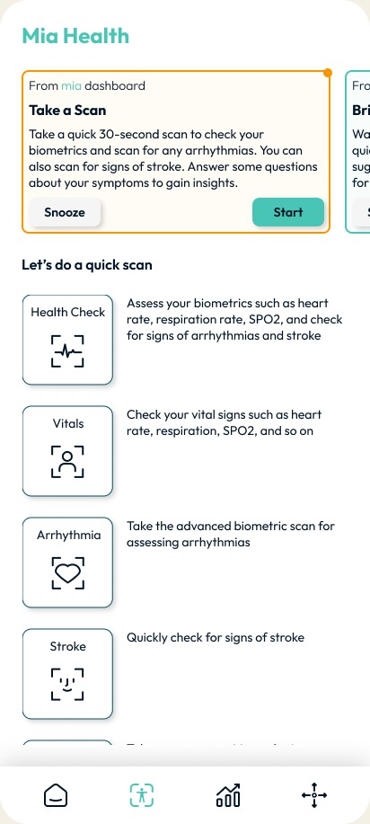
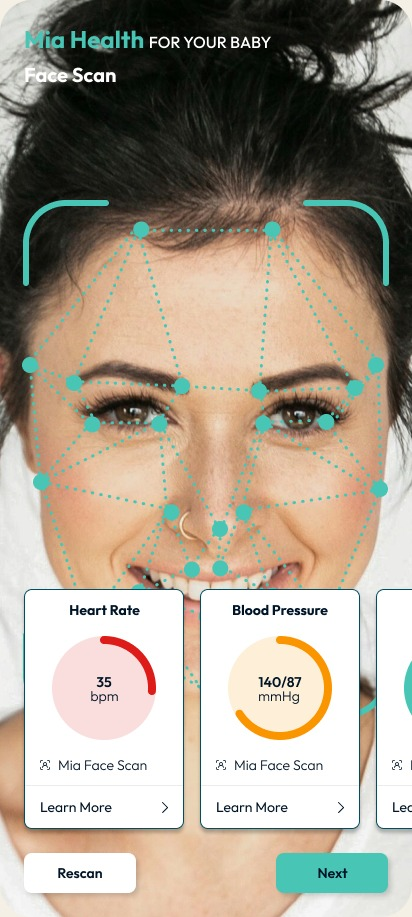
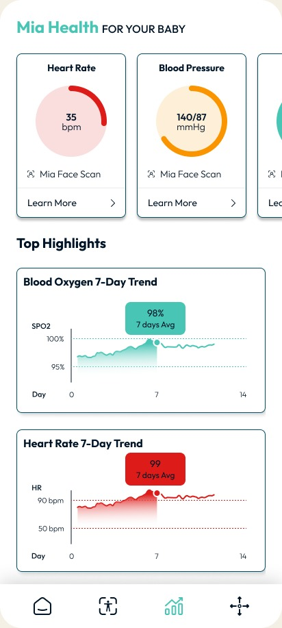

Objective
Improving user retention, adapting designs to different demographics

The Problem
Mia Health is a wellness platform that provides useful and actionable insights to users based on their biometrics, history, and trends.
The brand had a single app that they alternatively marketed according to the need: a consumer app for individuals, and also as a population management application that can be deployed organizationally.
However the home page was lackluster, showcasing recent biometric scan results and no clear goal or action for the user to follow.
Users would also frequently drop off after taking one scan and forget to use the app altogether, which affected the app’s ability to record their biometric history and analyze how the user’s numbers trended, which meant the trend algorithm could only provide generic advice, and not specific insights.
The app’s color and typography also failed to meet mobile accessibility criteria which was especially important considering the demographic of its users.

Old app homepage.
My Role & User Research
As the sole designer, I was responsible for revamping the app, addressing the unmet needs of the customers, conducting user research, designing, prototyping, and testing. I developed the designs on the existing framework and brand guidelines for the app in collaboration with the research/AI team, and the frontend and the backend development teams.
I conducted user interviews to figure out where the snags were, and how best to address them. One of the main issues was the home page being just numbers, which users could also get from their wearables.
Users would also frequently forget to do a scan everyday, which was crucial to the app monitoring their biometric trends. Even if the app was able to pull their data from wearables, there were other customers who had no wearables.
The Solutions
I played around with a couple of sketches for the home page and ultimately decided on a layout that displayed a nudge carousel that would change according to their recent numbers, and articles and material reflecting the user’s current biometric status. For example, for a user whose blood pressure numbers were tending upward, articles about low-sodium diets could be recommended, and the nudges would change to urge the user to take a quick hypertension assessment.

Overall changes for the app

Nudge feature that changes according to the user's daily scans

Homepage Scenario 1
The homepage for a user who is in their 50s and undergoing menopause, the recommended articles would cover topics relevant to the issues they would be facing.
The nudges generated could also be relevant, with suggestions to improve their lifestyle in the best suited way for that particular demographic.

Color-coded nudges
Color coded nudges based on priority and urgency of the task to be done.
Green - low priority task
Amber - medium priority task, results of the scan inform insights
Red - high priority task, results are highly pertinent to the functioning of the app and provide insights

Homepage Scenario 2
The homepage for a user who is pregnant and knows the date of their last menstrual period shows relevant pregnancy articles, a pregnancy journey tracker, and nudges that remind the user to do their daily check-in. This gamified aspect of the app helps users to log their daily symptoms without fail.

Red Flag Questionnaire
The daily check-in for a user with high-risk pregnancy includes a symptom questionnaire which tries to eliminates the possibility of an emergency situation - that there are no red flags presenting in the pregnant person. If such a red flag was present, the user saying they had bleeding in the last hour, say, the questionnaire closes down and the user is asked to seek emergency help.
This addressed several issues at once, and it also left more room for creatively displaying the biometrics as a second menu item, because the focus is on the recommendations for the user, and not their numbers.
I also grouped scans to create modules that would address specific categories like cardiac health, brain health, metabolic health etc.

Scan Page

Results after scanning

Biometric results overview